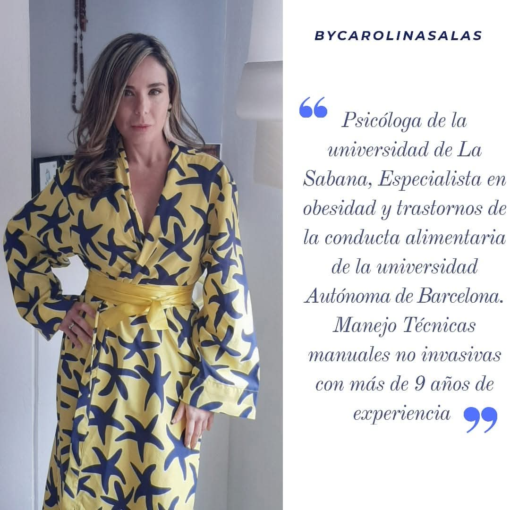

Hipopresivos Básico
Iniciación a la técnica hipopresiva con posturas fundamentales y respiración guiada.

Terapias de Hipopresivos
Técnicas posturales y respiratorias que fortalecen tu core profundo, rehabilitan el suelo pélvico y transforman tu cuerpo de forma segura y natural.
Sesiones personalizadas, recuperación postparto y programas grupales adaptados a cada etapa de tu vida.
Descubre nuestras terapiasUn recorrido visual por nuestras terapias


Bienestar integral a través de la gimnasia hipopresiva
Iniciación a la técnica hipopresiva con posturas fundamentales y respiración guiada.

Secuencias dinámicas para fortalecer el core y mejorar la postura corporal.

Programa especializado para recuperar el suelo pélvico y la faja abdominal tras el parto.

Fortalecimiento y rehabilitación del suelo pélvico para prevenir disfunciones.

Fusión de hipopresivos con pilates para un trabajo corporal completo y equilibrado.
Valoración individual y plan de terapia adaptado a tus necesidades específicas.
Resultados reales con la gimnasia hipopresiva